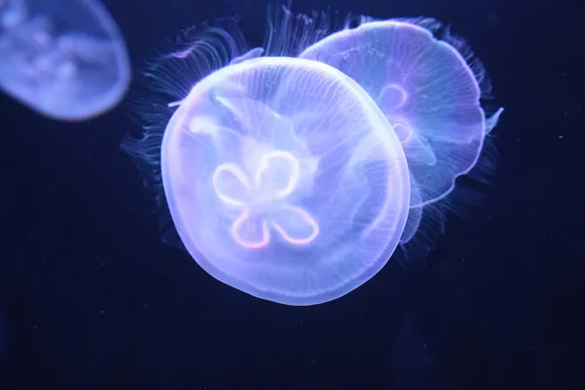
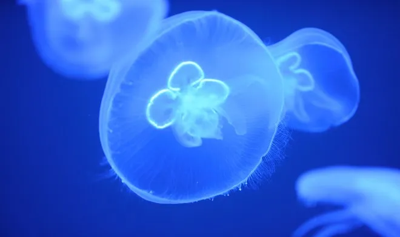

動物の説明
クラゲは「刺胞動物（Cnidaria）」というグループに属する無脊椎動物で、魚ではなく、骨も背骨も持っていない。
多くのクラゲは「鈴 (ベル) のような傘状の体 (メデューサ形)」と、その下に垂れ下がる「触手 (tentacles)」を持っていて、この姿が典型的。
体の大部分はゼリー状 (水っぽくて柔らかい) — 種によるけど、ほとんどが水でできているものも多い。

豆知識
クラゲ
クラゲはとても古い生き物 — 数億年前から海にいて、化石にもその仲間が見つかっていることがある。
体構造はすごくシンプル — 脳や骨、複雑な器官を持たず、それでも海でしっかり暮らせるよう進化してきた ― その「シンプルさ」がかえって強み。
一部のクラゲは、刺胞を使って獲物だけでなく、外敵から身を守る ― だから「美しいけど要注意」な生き物。

ユニークさ
クラゲの生き方
メデューサが卵や精子を出して繁殖 → 受精 → 幼生 (プラヌラ) → 海底に定着してポリプに → ポリプからまたメデューサが生まれる。つまり「無性と有性」を使い分ける、ちょっと複雑なライフサイクル。